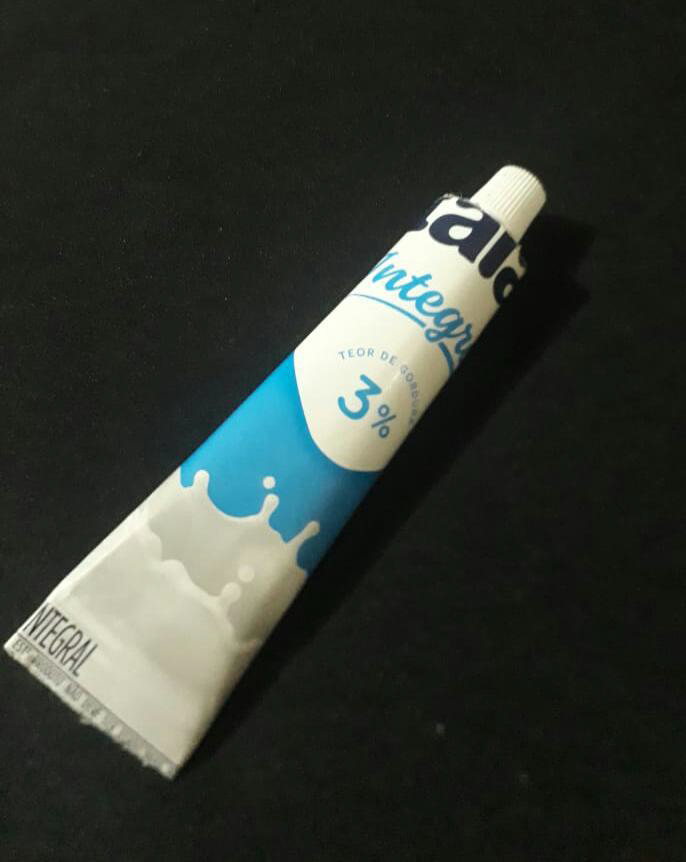
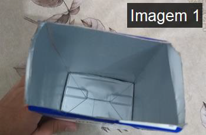
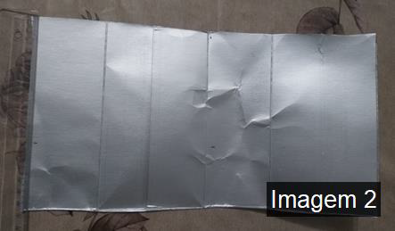
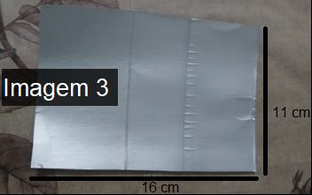
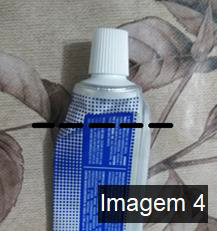
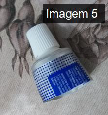
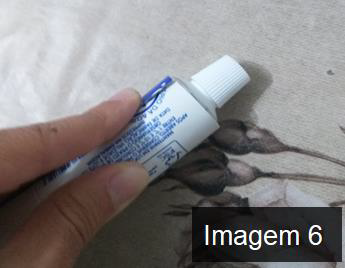

Grupo 04 - A
Integrantes:
- Ângelo Nogueira
- Brenda Mateus
- Carlos Pontes
- Enzo Mateus
- Guilherme Duarte
Embalagem de pasta dental feita com a reutilização da caixa de leite
Esta embalagem tem como material principal a embalagem tetrapak, pois é uma embalagem que pode ser totalmente reciclada.
A composição da embalagem de longa vida se dá, basicamente, em:
- 75% papel cartão: dois papéis unidos sem cola, que oferecem suporte mecânico e resistência à embalagem;
- 20% de filmes de polietileno (PEBD): impede a umidade e o contato direto do alimento com o alumínio, além de evitar o vazamento;
- 5% alumínio: barreira à entrada de luz e oxigênio.
Devido às características mencionadas acima e por ser compacta, a embalagem Tetra Pak, ou embalagem cartonada, é uma ótima solução para conservação de alimentos, fácil de ser transportada (em razão do espaço e do peso desse tipo de embalagem), sendo a principal escolha dos fabricantes de produtos.
Embalagem de Pasta Dental
Materiais Utilizados
- Uma tampinha de pasta dental
- Caixa de leite tetrapak
- Supercola ou grampeador
- Fita adesiva
Modo de Preparo
Faça um corte para abrir a caixa de leite para deixar igual ao da imagem (imagem 2), (não se esqueça de lavar por dentro da caixa de leite).

Em seguida, recorte um retângulo de 16x11cm (imagem 3).
Corte também o tubo do creme dental a uns dois dedos abaixo da base da tampa, iremos reutilizar a tampinha. (imagem 4).

Usando a supercola, cole o retângulo acima da parte da tampinha, e dando a volta nela, formando um cilindro (imagem 6)..
